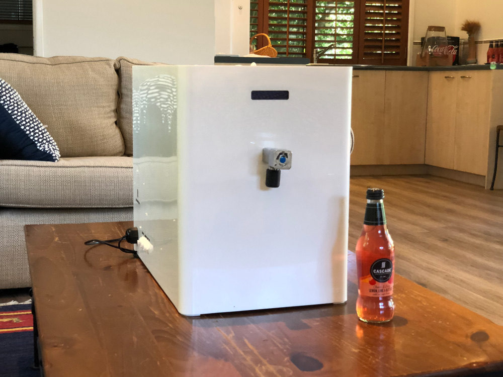

Our Flag Ship POU
Kitchen Sized POU: to be released
Sized to fit neatly on a kitchen workbench. Simply connect it to your tap water, and you are ready to enjoy safe mineral balanced drinking water to keep your family safe.
| Applications | Municipal Tap and Tube Well Water | Purification Production Rate | 100L/Hour |
|---|---|
| Body Material | ABS Food Grade Plastic |
| Auto Flushing System | Yes |
| Weight | 14kg (DRY) |
| UV lamp Power Consumption | 12W |
| Life of UV lamp | 1 Year |
| Total Power Consumption | 60W |
| Inlet Power Supply | Single Phase 220 - 240VAC 50-60Hz |